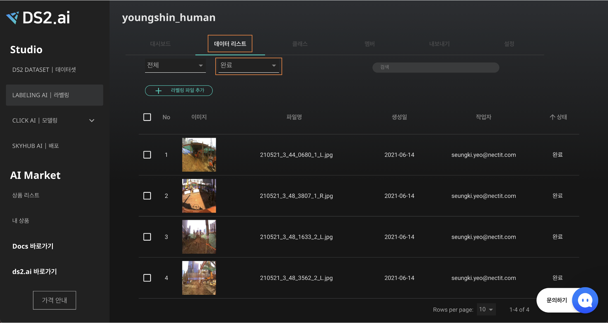

General AI 오토라벨링
General AI 는 이미 개발 완료된 Labeling AI의 인공지능을 활용하여 수동라벨링 없이 오토라벨링을 바로 진행할 수 있습니다.
1. General AI 에서 지원하는 검출 객체 및 오토라벨링 종류
사람인식
이미지 내 사람 객체의 위치를 감지하여 정보를 제공합니다.
- 클래스 : person
- 오토라벨링 종류: 일반(박스), 폴리건
동물인식
이미지 내 동물의 특정 객체를 탐지하고 위치를 식별하여 정보를 제공합니다.
- 클래스 : person, bear, bird, cat, cow, dog, elephant, giraffe, horse, person, sheep, zebra (지원하는 클래스 중 원하는 객체만 선택하여 검출할 수 있습니다.)
- 오토라벨링 종류: 일반(박스), 폴리건
자율주행
이미지 내 교통수단 및 도로시설의 특정 객체를 탐지하고 위치를 식별하여 정보를 제공합니다.

- 클래스: person, airplane, bench, bicycle, boat, bus, car, firehydrant, motorcycle, parkingmeter, stopsign, trafficlight, train, truck (지원하는 클래스 중 원하는 객체만 선택하여 검출할 수 있습니다.)
- 오토라벨링 종류: 일반(박스), 폴리건, 시멘틱
페이스 포인트 검출
이미지 내에 한 사람 또는 여러 사람의 인지하여 페이스 랜드마크를 표시합니다.
- 클래스 : person
- 오토라벨링 종류: 일반(박스), 폴리건
사람 키포인트 검출
이미지 내 사람의 관절 부위에 좌표를 찍고 이를 선으로 연결하여 키포인트 검출합니다.

사람의 포즈를 설명하기 위해 연결할 수 있는 좌표 집합을 형성합니다. 위의 그림과 같이 각 키포인트를 사람의 관절 마디로 잡은 후, 이미지나 영상에서 키포인트를 연결하면 인물 골격 추출이 가능합니다.
- 클래스 : person
- 오토라벨링 종류: 일반(박스), 폴리건
2. 프로젝트 생성하기
"LABELING AI | 라벨링" 에서 [+라벨링 시작하기] 버튼을 클릭하거나, "DS2 DATASET | 데이터셋" 으로 이동합니다.

오토라벨링 할 "ZIP" 형식의 데이터 셋을 선택한 후 [+라벨링 시작하기] 버튼을 클릭하세요. 이때 데이터의 업로드 상태는 "완료"여야 정상정으로 프로젝트를 생성할 수 있습니다.
데이터 업로드는 학습 데이터 연동 를 확인해주세요.
프로젝트 이름, 설명 및 데이터 카테고리를 "물체인식"으로 선택한 후 [다음]을 클릭해주세요.
생성한 프로젝트는 "LABELING AI | 라벨링"의 프로젝트 리스트에 추가된 것을 확인할 수 있습니다.
3. General AI 오토라벨링

Labeling 프로젝트 대시보드에서 [오토라벨링 시작하기] 버튼을 클릭해주세요.
General AI 개발을 위하여 다음과 아래 옵션을 설정합니다.
-
인공지능 종류 선택하기
General AI 에서 시람, 동물, 자율주행, 페이스 포인트 검출, 사람 키포인 중 개발을 원하는 라벨링 인공지능을 선택해주세요.
-
클래스 선택
각 카테고리에 포함된 객체 중 물체 인식하고자 하는 객체를 선택할 수 있습니다. 최소 1개 이상의 클래스를 선택해야 하며 다중 선택이 가능합니다.
-
오토라벨링 종류 선택
- 일반(박스): 객체를 사각형의 박스형태로 라벨링합니다.
- 폴리건: 객체의 형태에 따라 물체 주의를 점으로 찍어 선형으로 라벨링 합니다.
- 시멘틱: 객체를 픽셀단위로 구분하여 라벨링 합니다.
(일반 → 폴리건 → 시멘틱 순으로 정교한 라벨링이 가능합니다)
-
전처리 옵션
얼굴 비식별화 옵션을 체크하면, 이미지에 포함된 모든 사람 객체를 감지하여 얼굴을 모자이크 처리하여 비식별화 합니다.
-
오토라벨링 장수
최소 100장부터 최대 업로드한 전체 이미지 수 오토라벨링이 가능합니다.
옵션 설정 후 [오토라벨링 시작하기] 버튼을 클릭하면 자동으로 오토라벨링을 시작합니다.

팝업창으로 인공지능 개발이 정상적으로 시작됨을 알립니다. 진행상황은 대시보드에서 확인 가능하며, 완료되면 메일 및 알림으로 안내드립니다.
4. 오토라벨링 결과 확인하기
결과물을 직접 확인하고, 라벨을 수정할 수 있습니다.

"LABELING AI | 라벨링 → 데이터 리스트" 에서 작업 상태가 "완료"인 데이터를 확인합니다.
리스트에서 확인하고자 하는 데이터를 클릭하면 오토라벨링된 작업물을 확인할 수 있으며, 좌측 하단의 [EDIT LABEL]을 클릭하여 라벨을 수정할 수 있습니다.